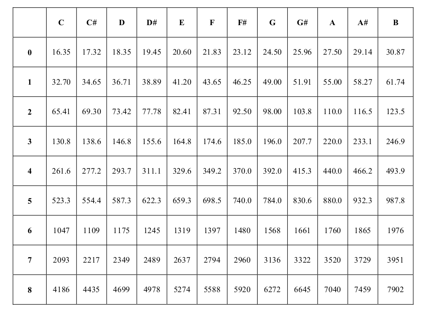
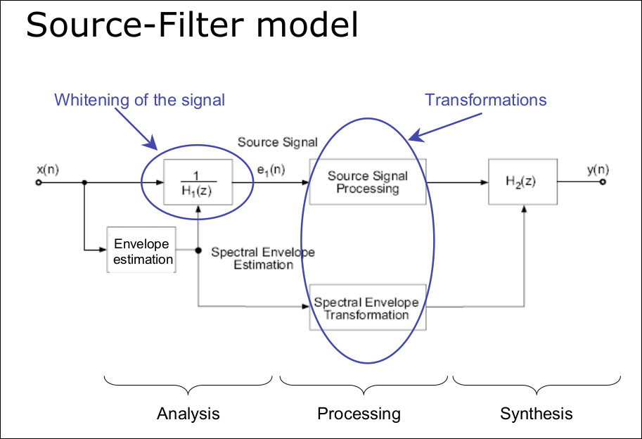

batumon
Created: 2017-02-20 Mon 11:08
Table of Contents
- 1. Do Mobile Phones Dream Of Electronic Orchestras ?
- 1.1. Original Repertoire
- 1.1.1. Mapping accelerometer: up-down -> spectral richness and (left-right) -> fundamental frequency for FM synthesis
- 1.1.2. Preprogrammed modulation ratios and pitches for selection
- 1.1.3. Circle map effect
- 1.1.4. DJ control loopback rate by tilting and changes timbre based on accelerometer
- 1.1.5. Using it as a diffuser in space
- 1.1. Original Repertoire
- 2. Ocarina
- 3. Toolkits
- 4. Feature Analysis
- 5. Ideas
- 5.1. MOGAT: Auditory training for pitch perception, pitch production
- 5.2. Gesture-based Interactive Re-mixeable Dance Floor (GIRD) Music Tech Fest
- 5.3. ChoirMob, Vuzik
- 5.4. Granular Synthesis
- 5.5. UrMus live coding
- 5.6. SuperCollider
- 5.7. Overtone
- 5.8. OpenSound Control (OSC)
- 5.9. Magnetic Interation
- 5.10. Sonic Tennis. Play tennis with spatial audio feedback
- 5.11. Using digital compass
- 5.12. Sound bounce
- 5.13. MoMu API
- 5.14. PureData Open Source of Max
- 5.15. ChucK
- 5.16. MIT Spring 2015
- 5.17. MIT Spring 2016
- 5.18. Fall 2016
- 5.19. Planet CCRMA
- 5.20. DJ Controller
- 5.21. Dynamic Performance Augmentation: Vocal Harmonizer, Arpeggiator, Chord Changer, Harmonic Synthesizer
- 5.22. Magic Baton control tempo, EQ level based on hand movements with particles effect
- 5.23. Snakio: Eat musical notes with powerup which changes music played
- 5.24. Explore Spotify playlist: Can change attributes for song recommendation
- 5.25. Guided chord progression. Uses the library "Synth"
- 5.26. Using hand gestures to create different effects to be added during live performance
- 5.27. Record small segment of audio to be used later for synthesis
- 6. Mapping motion to timbre: FM Synthesis
- 7. Interactive Virtual Percussion
- 8. The Interactive Music Producer
- 9. AuRal: A Mobile Interactive System for Geo-Locative Audio Synthesis
- 10. Game Design for Expressive Mobile Music
- 11. Grab & Play: Creative Mapping
- 12. Sound Synthesis: History & Theory
- 13. Electronic Music Synthesis & Audio Effects Processing
- 13.1. Music notes, pitch and octave
- 13.2. Timbre & Physical Modelling
- 13.3. Additive synthesis
- 13.4. FM Synthesis
- 13.5. Audio Effects
- 13.5.1. Echo (repeat signal after a delay with reduced gain)
- 13.5.2. Reverb (persistence of sound after being produced due to reflection)
- 13.5.3. Flanging
- 13.5.4. Chorus
- 13.5.5. Bass (tone in low-pitched range)
- 13.5.6. Treble (high frequency)
- 13.5.7. WahWah Effect (altering resonance of musical notes)
- 13.5.8. Tremolo (variation of amplitude)
- 13.5.9. Fade In Fade Out
- 14. Synthesis Techniques
- 15. Gesture-Sound Mapping by Demonstration in Interactive Music Systems
- 16. Machine Learning in Automatic Chord Generation
- 17. MUSICAL AUDIO SYNTHESIS USING AUTOENCODING NEURAL NETS
- 18. Random ideas
1 Do Mobile Phones Dream Of Electronic Orchestras ?
1.1 Original Repertoire
1.1.1 Mapping accelerometer: up-down -> spectral richness and (left-right) -> fundamental frequency for FM synthesis
1.1.2 Preprogrammed modulation ratios and pitches for selection
1.1.3 Circle map effect
1.1.4 DJ control loopback rate by tilting and changes timbre based on accelerometer
1.1.5 Using it as a diffuser in space
2 Ocarina
2.1 Physical interaction design process
2.1.1 How many points multi touch allowed ?
2.1.2 Uses accelerometer for vibrato (left-right), timbre(front-back)
2.1.3 Using ChucK to track amplitude of incoming signal
2.2 Sound synthesis
2.2.1 ChucK program consists of amplitude tracker and articulator
3 Toolkits
3.1 STK (Synthesis Toolkit)
4 Feature Analysis
4.1 RMS of a window of samples or Highest sample as -> Amplitude
4.2 Number of zero crossings -> Pitch
5 Ideas
5.1 MOGAT: Auditory training for pitch perception, pitch production
5.2 Gesture-based Interactive Re-mixeable Dance Floor (GIRD) Music Tech Fest
5.3 ChoirMob, Vuzik
5.4 Granular Synthesis
5.5 UrMus live coding
5.6 SuperCollider
5.7 Overtone
5.8 OpenSound Control (OSC)
5.9 Magnetic Interation
5.10 Sonic Tennis. Play tennis with spatial audio feedback
5.11 Using digital compass
5.12 Sound bounce
5.13 MoMu API
5.14 PureData Open Source of Max
5.15 ChucK
5.16 MIT Spring 2015
5.17 MIT Spring 2016
5.18 Fall 2016
5.19 Planet CCRMA
5.20 DJ Controller
5.21 Dynamic Performance Augmentation: Vocal Harmonizer, Arpeggiator, Chord Changer, Harmonic Synthesizer
5.22 Magic Baton control tempo, EQ level based on hand movements with particles effect
5.23 Snakio: Eat musical notes with powerup which changes music played
5.24 Explore Spotify playlist: Can change attributes for song recommendation
5.25 Guided chord progression. Uses the library "Synth"
5.26 Using hand gestures to create different effects to be added during live performance
5.27 Record small segment of audio to be used later for synthesis
6 Mapping motion to timbre: FM Synthesis
6.1 
6.2 Mapping:
6.2.1 Pitch recognition = carrier frequency
6.2.2 elevation = modulation ratio
6.2.3 rotation = modulation index
7 Interactive Virtual Percussion
7.1 Editing mode allows for creation of virtual instruments from different materials
7.2 Sound synthesis: Physical waveguide synthesis (Cook 2007)
8 The Interactive Music Producer
8.1 Music & Sound Production
8.1.1 Ableton Live, Max for Live, PureData, Max
8.1.2 Composing interactive music (Winkler 1998)
8.2 Interactive Technologies
8.2.1 user experience and they way music is perceived
8.2.2 Music and Human-Computer Interaction (Holland 2013)
8.3 Data Mapping and Manipulation
8.3.1 Interactive Music 3.0(Quay 2012), Making Motion Musical (Bevilacqua), Drummond 2009
8.3.2 Wekinator, Gesture Follower
8.3.3 Dynamic Music Objects (Thalmann 2016)
9 AuRal: A Mobile Interactive System for Geo-Locative Audio Synthesis
9.1 Client App
9.1.1 Uses Android port of SuperCollider
9.1.2 Uses spatial data to synthesize sound
10 Game Design for Expressive Mobile Music
10.1 Magic Piano: simple, hardcoded music note and pitch
10.2 Magic Fiddle
10.3 Ocarina
10.4 Leaf Trombone
11 Grab & Play: Creative Mapping
11.1 Based on Wekinator with additional features:
11.1.1 Interface with any synthesizer that accepts OSC messages
11.1.2 Source Code
12 Sound Synthesis: History & Theory
12.1 Oscillator = generates waveforms at different pitch
12.1.1 Triangle
12.1.2 Saw
12.1.3 Square
12.1.4 Pulse
12.2 Filter = Timbre
12.2.1 Subtractive synthesis removes some frequencies or emphasis some
12.3 Amplifer = Amplitude
12.3.1 Varying amplitude modify characteristics. marimba and accordion
12.4 Low Frequency Oscillator (LFO)
12.4.1 Low sub-audible frequency range where its output use as source of modulation
12.5 Envelope generator (ASDR)
12.5.1 modulation source to control synthesizer parameter
12.5.2 Attack time, Decay Time, Sustain Level, Release Time
12.5.3 Create filter sweep and create volume shape in amplifier to mimic certain instruments
13 Electronic Music Synthesis & Audio Effects Processing
13.1 Music notes, pitch and octave
13.1.1 Characterized by fundamental frequency and its ratios = overtones
13.1.2 
13.2 Timbre & Physical Modelling
13.2.1 Tone quality. Charateristic quality of a sound often used to discern instruments
13.2.2 Frequency Spectrum (relative energy distribution of partials) affect timbre
13.2.3 Variation in amplitude such as attack and fade time also affet timbre
13.3 Additive synthesis
13.3.1 using sinusoids of different frequency and amplitude ratio
13.4 FM Synthesis
13.5 Audio Effects
13.5.1 Echo (repeat signal after a delay with reduced gain)
13.5.2 Reverb (persistence of sound after being produced due to reflection)
13.5.3 Flanging
13.5.4 Chorus
13.5.5 Bass (tone in low-pitched range)
13.5.6 Treble (high frequency)
13.5.7 WahWah Effect (altering resonance of musical notes)
13.5.8 Tremolo (variation of amplitude)
13.5.9 Fade In Fade Out
14 Synthesis Techniques
14.1 Additive Synthesis
14.2 Source-filter
14.2.1 
14.2.2 Amplitude Modulation
14.2.3 Frequency Modulation
15 Gesture-Sound Mapping by Demonstration in Interactive Music Systems
15.1 Hierarchical Approach to Mapping
15.1.1 Template-based learning with single example
15.2 Multimodal modelling of gesture-sound mapping
15.2.1 multimodal HMM modelling dependencies between gesture and sound
16 Machine Learning in Automatic Chord Generation
16.1 Related work
16.1.1 Simon HMM and 60 chords for interactive product
16.1.2 Paiement uses multilevel graphical model to generate chord progression
16.1.3 Legaspi uses genetic algorithm
16.2 Methodology
16.2.1 Random Forest
16.2.2 HMM
16.3 Aim
16.3.1 Given an a music piece with several measures. Predict chord for each measure
17 MUSICAL AUDIO SYNTHESIS USING AUTOENCODING NEURAL NETS
Source Code. Learn high-level features from low-level features using Autoencoder